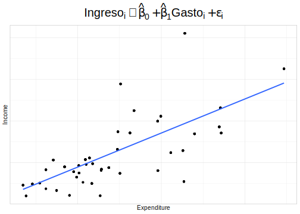
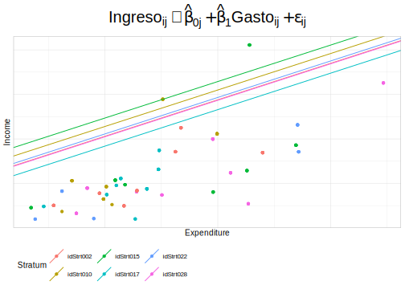
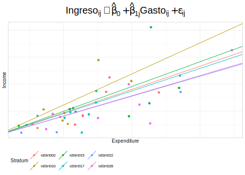
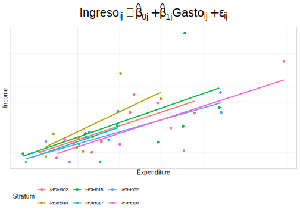

Capítulo 9 Modelos multinivel en el contexto de encuestas de hogares
Los modelos multinivel, también conocidos como modelos de efectos mixtos o modelos jerárquicos, son una técnica estadística utilizada en el análisis de datos de encuestas de hogares que tienen una estructura jerárquica o multinivel. En estas encuestas, los datos se recopilan a nivel individual (por ejemplo, sobre la edad, el género y la educación de cada miembro del hogar) y a nivel del hogar (por ejemplo, sobre el ingreso del hogar, la propiedad de la vivienda y la ubicación geográfica).
Los modelos multinivel permiten analizar cómo los factores a nivel del hogar y a nivel individual influyen en las respuestas a las preguntas de la encuesta. Por ejemplo, un modelo multinivel podría utilizarse para investigar cómo el ingreso del hogar y la edad de los miembros del hogar influyen en el consumo de alimentos saludables.
En los modelos multinivel, se modelan los efectos aleatorios y fijos. Los efectos fijos representan las relaciones promedio entre las variables, mientras que los efectos aleatorios modelan la variación en estas relaciones entre los hogares. De esta manera, los modelos multinivel permiten tener en cuenta la heterogeneidad en la población y obtener estimaciones más precisas de los efectos de interés.
En resumen, los modelos multinivel son una herramienta valiosa en el análisis de datos de encuestas de hogares al permitir analizar cómo los factores a nivel del hogar y a nivel individual influyen en las respuestas a las preguntas de la encuesta y al tener en cuenta la estructura jerárquica de los datos.
algunas referencias bibliográficas relevantes sobre el uso de modelos multinivel en encuestas de hogares son:
“Multilevel statistical models” de Harvey Goldstein (2011): Este libro es una referencia clásica para el análisis de datos multinivel, y aborda el uso de modelos jerárquicos en una variedad de contextos, incluyendo encuestas de hogares. El libro cubre tanto modelos de regresión como de varianza-covarianza, y discute temas como la selección de variables, la validación de modelos y la interpretación de resultados.
“Data analysis using regression and multilevel/hierarchical models” de Andrew Gelman y Jennifer Hill (2006): Este libro también es una referencia popular para el análisis de datos multinivel, y ofrece una introducción accesible a la teoría y la práctica de los modelos jerárquicos. El libro cubre tanto modelos de regresión como de varianza-covarianza, y utiliza ejemplos de encuestas de hogares para ilustrar los conceptos.
“Multilevel and longitudinal modeling using Stata” de Sophia Rabe-Hesketh y Anders Skrondal (2012): Este libro es una guía práctica para el análisis de datos multinivel y longitudinales utilizando el software estadístico Stata. El libro cubre tanto modelos de regresión como de varianza-covarianza, y utiliza ejemplos de encuestas de hogares para ilustrar los conceptos.
“A comparison of Bayesian and likelihood-based methods for fitting multilevel models” de William J. Browne y David Draper (2006): Este artículo compara el rendimiento de los enfoques Bayesianos y basados en verosimilitud para ajustar modelos jerárquicos en el contexto de encuestas de hogares. Los autores concluyen que ambos enfoques pueden ser efectivos, pero que el enfoque Bayesiano puede ofrecer mayores ventajas en términos de flexibilidad y precisión.
“A brief conceptual tutorial of multilevel analysis in social epidemiology: using measures of clustering in multilevel logistic regression to investigate contextual phenomena” de Juan Merlo y otros (2006): Este artículo presenta una introducción a los modelos jerárquicos en el contexto de la epidemiología social, y utiliza ejemplos de encuestas de hogares para ilustrar los conceptos. Los autores discuten cómo los modelos jerárquicos pueden ser utilizados para investigar fenómenos contextuales, como la segregación residencial y las desigualdades de salud.
Para iniciar este capítulo se cargan las librerías necesarias, la base de datos y el tema de la Cepal para realizar los gráficos:
Cargue de librerías:
knitr::opts_chunk$set(cache = TRUE, warning = FALSE, message = FALSE, error = FALSE)
options(digits = 4)
options(tinytex.verbose = TRUE)
library (survey)
library(srvyr)
library(convey)
library(TeachingSampling)
library(printr)
library(stargazer)
library(broom)
library(jtools)
library(modelsummary)
library(patchwork)
library(ggplot2)Cargue de la base de datos:
Creando el tema de la CEPAL para generar los gráficos en este capítulo:
theme_cepal <- function(...) theme_light(10) +
theme(axis.text.x = element_blank(),
axis.ticks.x = element_blank(),
axis.text.y = element_blank(),
axis.ticks.y = element_blank(),
legend.position="bottom",
legend.justification = "left",
legend.direction="horizontal",
plot.title = element_text(size = 20, hjust = 0.5),
...) Para efectos de ejemplificar los conceptos que se presentarán en este capítulo, definamos una muestra con 6 estratos como se muestra a continuación:
encuesta_plot <- encuesta %>%
dplyr::select(HHID, Stratum) %>% unique() %>%
group_by(Stratum) %>% tally() %>%
arrange(desc(n)) %>% dplyr::select(-n) %>%
slice(1:6L) %>%
inner_join(encuesta) %>% filter(Expenditure <700) %>%
dplyr::select(Income, Expenditure, Stratum,
Sex, Region, Zone)
encuesta_plot %>% slice(1:10L)| Income | Expenditure | Stratum | Sex | Region | Zone |
|---|---|---|---|---|---|
| 697.3 | 296.1 | idStrt017 | Male | Norte | Rural |
| 697.3 | 296.1 | idStrt017 | Female | Norte | Rural |
| 697.3 | 296.1 | idStrt017 | Male | Norte | Rural |
| 697.3 | 296.1 | idStrt017 | Female | Norte | Rural |
| 526.8 | 294.8 | idStrt017 | Male | Norte | Rural |
| 526.8 | 294.8 | idStrt017 | Female | Norte | Rural |
| 526.8 | 294.8 | idStrt017 | Female | Norte | Rural |
| 526.8 | 294.8 | idStrt017 | Male | Norte | Rural |
| 526.8 | 294.8 | idStrt017 | Male | Norte | Rural |
| 526.8 | 294.8 | idStrt017 | Female | Norte | Rural |
A modo introductorio en este capítulo, se comenzará ajustando un modelo lineal cuya variable a modelar son los ingresos de los hogares y cuya variable explicativa son los gastos de los hogares sin considerar el efecto de los estratos del diseño muestral. A continuación, se muestra la gráfica:
library(latex2exp)
ggplot(data = encuesta_plot,
aes(y = Income, x = Expenditure)) +
geom_jitter() +
theme( legend.position="none",
plot.title = element_text(hjust = 0.5)) +
geom_smooth( formula = y ~ x,
method = "lm", se = F) +
ggtitle(
latex2exp::TeX("$Ingreso_{i}\\sim\\hat{\\beta}_{0}+\\hat{\\beta}_{1}Gasto_{i}+\\epsilon_{i}$")) +
theme_cepal()
Como se pudo observar en la gráfica anterior, el modelo lineal ajustado es común y se ajusta con los métodos estadísticos antes explicados. Como se ha explicado en capítulos anteriores, este modelo se basa en varios supuestos principales con respecto a la naturaleza de los datos en la población; más específicamente asume independencia de las observaciones a algunas variables de interés, por ejemplo, los estratos socioeconómicos.
Naturalmente este supuesto no es válido más aún, cuando la selección de la muestra en muestreo probabilístico se hace por estrato muestral y además, el comportamiento de los estratos muestrales es diferente entre ellos.
Teniendo en cuenta lo anterior, a continuación, se ajusta un modelo de regresión en donde el intercepto cambia de acuerdo con cada estrato. Es decir, se fija una pendiente común y se varía el intercepto, como se muestra a continuación:
B1 <- coef(lm(Income ~ Expenditure, data = encuesta_plot))[2]
(coef_Mod <- encuesta_plot %>% group_by(Stratum) %>%
summarise(B0 = coef(lm(Income ~ 1))[1]) %>%
mutate(B1 = B1))| Stratum | B0 | B1 |
|---|---|---|
| idStrt002 | 496.9 | 1.637 |
| idStrt010 | 584.7 | 1.637 |
| idStrt015 | 660.6 | 1.637 |
| idStrt017 | 408.3 | 1.637 |
| idStrt022 | 517.9 | 1.637 |
| idStrt028 | 492.1 | 1.637 |
Ahora, se grafican cada uno de los modelos ajustados previamente:
ggplot(data = encuesta_plot,
aes(y = Income, x = Expenditure,
colour = Stratum)) +
geom_jitter() + theme(legend.position="none",
plot.title = element_text(hjust = 0.5)) +
geom_abline(data = coef_Mod,
mapping=aes(slope=B1,
intercept=B0,
colour = Stratum)) +
ggtitle(
latex2exp::TeX("$Ingreso_{ij}\\sim\\hat{\\beta}_{0j}+\\hat{\\beta}_{1}Gasto_{ij}+\\epsilon_{ij}$"))+
theme_cepal()
En la gráfica anterior Se puede observar que el ajuste no fue el mejor: sin embargo, dicho ajuste se puede ir mejorando a medida que el modelo se vaya afinando e incluyendo efectos adicionales.
Por otro lado, se ajustará un modelo con pendiente aleatoria. Dicha pendiente se estimará para cada uno de los estratos definidos en el diseño muestral como se presenta a continuación:
B0 <- coef(lm(Income ~ Expenditure,
data = encuesta_plot))[1]
(coef_Mod <- encuesta_plot %>% group_by(Stratum) %>%
summarise(
B1 = coef(lm(Income ~ -1 + Expenditure))[1]) %>%
mutate(B0 = B0))| Stratum | B1 | B0 |
|---|---|---|
| idStrt002 | 1.727 | 29.56 |
| idStrt010 | 2.303 | 29.56 |
| idStrt015 | 1.837 | 29.56 |
| idStrt017 | 1.672 | 29.56 |
| idStrt022 | 1.478 | 29.56 |
| idStrt028 | 1.495 | 29.56 |
Graficando el modelo con pendiente aleatoria definido anteriormente tenemos:
ggplot(data = encuesta_plot,
aes(y = Income, x = Expenditure,
colour = Stratum)) +
geom_jitter() + theme(legend.position="none",
plot.title = element_text(hjust = 0.5)) +
geom_abline(data = coef_Mod,
mapping=aes(slope=B1,
intercept=B0, colour = Stratum)) +
ggtitle(
latex2exp::TeX("$Ingreso_{ij}\\sim\\hat{\\beta}_{0}+\\hat{\\beta}_{1j}Gasto_{ij}+\\epsilon_{ij}$"))+
theme_cepal()
A continuación, se genera un gráfico para un modelo con intercepto y pendientes aleatorias,
ggplot(data = encuesta_plot,
aes(y = Income, x = Expenditure,
colour = Stratum)) +
geom_smooth( formula = y ~ x, method = "lm", se = F) +
geom_jitter() + theme(legend.position="none",
plot.title = element_text(hjust = 0.5)) +
ggtitle(
latex2exp::TeX("$Ingreso_{ij}\\sim\\hat{\\beta}_{0j}+\\hat{\\beta}_{1j}Gasto_{ij}+\\epsilon_{ij}$"))+
theme_cepal()
Se puede observar que este modelo se ajusta mejor a los datos que el modelo anterior y que el modelo lineal clásico.
Con los anteriores modelos se quería mostrar la importancia de realizar modelos multinivel cuando la naturaleza de los datos es anidadas. Para ejemplificar (Finch, W. H., et al, 2019), suponga que un investigador está interesado en medir el impacto que tendrá un nuevo método de enseñanza en el aprendizaje de los estudiantes. Para esto, planea un diseño muestral en donde selecciona escuelas de manera aleatoria y las ubica en un grupo de tratamiento o de control. En este sentido, si la escuela A se asigna en el grupo tratamiento y dado que el diseño muestral utilizado fue de conglomerados entonces, todos los estudiantes de la escuela también estarán en la condición de tratamiento. Es de tener en cuenta que, las escuelas (conglomerados) son las que se asignan a un grupo en particular y no directamente los estudiantes. Además, se sabe que, la escuela misma, más allá de la condición de tratamiento, tiene un impacto directo en el desempeño de los estudiantes. Este impacto se manifiesta como correlaciones en los puntajes de las pruebas de rendimiento entre las personas que asisten a esa escuela. Por lo tanto, si utilizáramos un ANOVA simple de una vía para comparar las medias de la prueba de rendimiento para los grupos de tratamiento y control con dichos datos muestreados por conglomerados, probablemente estaríamos violando la suposición de errores independientes porque un factor más allá de la condición de tratamiento (en este caso de la escuela) tendría un impacto adicional en la variable de resultado.
Por lo general, nos referimos a la estructura de datos descrita anteriormente como anidada, lo que significa que los puntos de datos individuales en un nivel (por ejemplo, estudiante) aparecen solo en un nivel de una variable de nivel superior, como la escuela. Por lo tanto, los estudiantes están anidados dentro de la escuela. Dichos diseños pueden contrastarse con una estructura de datos cruzados en la que los individuos del primer nivel aparecen en múltiples niveles de la segunda variable.